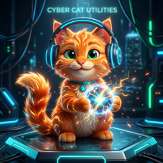
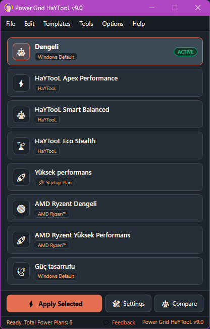

Bilgisayarınızın Gücünü Yapay Zeka Gibi Akıllı Yönetin
Ekran kartı yükünüze göre güç planlarını otomatik değiştiren, boşta watt tasarrufu yapıp işlemci termallerini düşüren, oyunda ise mikro takılmaları (micro-stuttering) ve gecikmeyi önleyerek kararlı maksimum FPS sunan modern Windows güç yöneticisi.

"Masaüstünde fısıltı kadar sessiz, oyunda şimşek kadar hızlıyım! 🐾⚡"
Akıllı GPU Otomatik Güç Anahtarını Test Edin
Aşağıdaki kaydırıcıyı hareket ettirerek ekran kartı yükünü simüle edin ve Power Grid HaYTooL'un sistemi nasıl tam zamanında yönettiğini canlı görün.
Performans, Tasarruf ve Tam Kontrol
Karmaşık Windows Denetim Masası adımlarını unutun. İhtiyacınız olan her şey parmaklarınızın ucunda.
Akıllı GPU Yük İzleme
3 kademeli eşik sistemi (0-10% Boşta, 10-30% Günlük, 30-100% Oyun) ile güç planları arasında anında geçiş yaparak sıfır gecikme ve maksimum enerji tasarrufu sağlar.
Yan Yana Plan Karşılaştırıcı
Sisteminizdeki herhangi iki güç planının işlemci sınırlarını, Turbo Boost durumlarını, soğutma ilkelerini ve uyku sürelerini satır satır görselleştirin.
Derin Plan Düzenleyici
GUID kodları veya karmaşık komut istemleriyle uğraşmadan minimum/maksimum CPU durumlarını, fan politikasını ve zaman aşımlarını tek ekrandan ayarlayın.
Otomatik ZIP Yedekleme
Herhangi bir değişiklik öncesinde tüm güç planlarınız tarih ve saat damgalı ZIP olarak yedeklenir. İstediğiniz an tek tıkla eski haline dönebilirsiniz.
Zarif Toast Bildirimleri
Plan ister elinizle ister otomatik değişsin; saatin hemen yanında beliren göz yormayan, estetik bildirim kartıyla sistem durumundan anında haberdar olun.
Masaüstü Sağ Tık Entegrasyonu
Yönetici izni (UAC) pencereleriyle uğraşmadan, masaüstü sağ tık menüsüne tek tıkla güç planları menüsünü ekleyin veya kaldırın.
Kullanıcıya Özel Açılış Planı
Windows oturumunuz her açıldığında doğrudan istediğiniz özel güç profilinin aktif olmasını sağlayın.
Gizli Güç Ayarlarını Açma
Denetim Masasındaki kilitli çekirdek park etme (core parking), agresif Turbo Boost ve PCIe ASPM güç ayarlarının kilidini tek tıkla açın.
Kapsamlı Komut Satırı (CLI)
Oyun başlatıcıları, Stream Deck veya betikleriniz için tam otomasyon: -smart on/off ile GPU anahtarını yönetin, planları listeleyin veya GUID ile anında geçiş yapın.
Sade, Şık ve Modern Tasarım
Windows 11 tasarım diliyle kusursuz uyum sağlayan akıcı WPF arayüzü.

Windows Denetim Masası vs. Power Grid HaYTooL
| Özellik | Klasik Windows Güç Seçenekleri | ⚡ Power Grid HaYTooL |
|---|---|---|
| GPU Yüküne Göre Otomatik Geçiş | ❌ Yok (Plan sabit kalır) | ✅ Var (3 Kademeli Akıllı Otomasyon) |
| Planları Yan Yana Karşılaştırma | ❌ Yok | ✅ Görsel Yan Yana Karşılaştırıcı |
| Masaüstü Sağ Tık Menüsü | ❌ Yok | ✅ Tek Tıkla Entegrasyon (HKCU) |
| Otomatik ZIP Yedekleme | ❌ Yok | ✅ Her Değişiklikte Tarihli ZIP |
| Gizli Güç Ayarları Kilit Çözücü | ❌ Komut istemi / Kayıt Defteri bilgisi gerekir | ✅ Tek Tıkla Tüm Kilitleri Açma |
| Görsel Tema Seçenekleri | ❌ Yok | ✅ 14 Özel Açık & Koyu Palet |
| Kurulum İhtiyacı | İşletim sistemi bileşeni | ✅ %100 Taşınabilir Tek .EXE |
| Komut Satırı (CLI) & Otomasyon | ⚠️ Yalnızca karmaşık powercfg parametreleri | ✅ Tam Otomasyon (Akıllı anahtar, tepsi ve plan geçişi) |
Neden Power Grid HaYTooL?
Piyasadaki arka planda gizli servisler çalıştıran, telemetri toplayan ve sistemi yoran hantal araçlara tepki olarak doğdu.
%100 Temiz & Sıfır Telemetri
Arka planda çalışan casus Windows servisleri, otomatik veri toplayıcılar veya reklam motorları kesinlikle barındırmaz. Kodlarımız GitHub üzerinde tamamen açıktır.
Yerel Windows Win32 / Kernel API
Sisteminize yabancı veya tehlikeli üçüncü parti sürücüler yüklemez; doğrudan Windows'un yerel Powrprof.dll güç mimarisini yönetir.
Düşük Gecikme & Kararlılık Garantisi
Oyun sırasında işlemci çekirdeklerini uyanık tutarak mikro takılmaları (micro-stuttering) ve FPS dalgalanmalarını sıfırlar; masaüstünde ise watt tüketimini minimize eder.
Sıkça Sorulan Sorular
Power Grid HaYTooL kurulum gerektirir mi?
Hayır! Uygulama tamamen tek dosya taşınabilir (.exe) olarak çalışır. Kurulum yapmadan USB belleğinizden veya doğrudan istediğiniz klasörden çalıştırabilirsiniz.
Akıllı GPU Anahtarı nasıl enerji tasarrufu sağlar?
Oyun oynamadığınızda veya masaüstünde video izlerken bilgisayarınızı otomatik olarak Eco Stealth veya Dengeli plana geçirir. Bu sayede işlemci gereksiz yere yüksek frekansta çalışmaz, fanlar susar ve elektrik tasarrufu sağlanır.
Oyunlarda mikro takılmaları (micro-stuttering) ve gecikmeyi önler mi?
Evet! Standart Windows planları oyun ortasında işlemci çekirdeklerini gereksiz yere park edip frekans düşürebilir. Power Grid, GPU yükü algılandığında Apex moduna geçerek tüm çekirdekleri uyanık tutar ve ani FPS düşüşlerini önler.
İşlemci sıcaklıklarını ve termal kısılmayı (thermal throttling) nasıl etkiler?
Masaüstü ve hafif kullanımda voltajı ve gereksiz Turbo Boost sıçramalarını dizginleyerek donanımın serin kalmasını sağlar. Isı birikimi önlendiği için oyun açıldığında sistem termal sınıra çarpmadan maksimum saat hızında çalışır.
Yönetici (Admin) izni gerektirir mi?
Temel güç planı değişimleri ve masaüstü sağ tık entegrasyonu standart kullanıcı (HKCU) yetkisiyle yönetici izni gerekmeden çalışır. Sadece fabrika ayarlarına sıfırlama gibi derin sistem ayarlarında yetki talep edilir.
Bozulursa eski planlarımı geri getirebilir miyim?
Evet! Uygulama her değişiklikte otomatik ZIP yedeği alır. 'Otomatik ZIP Yedeğinden Geri Yükle' veya 'Varsayılanlara Sıfırla' menüleriyle anında eski orijinal planlarınıza dönebilirsiniz.
Komut satırından (CLI / CMD) yönetilebilir mi?
Evet! PowerGridHaYTooL.exe -smart on/off, -list, -apply {GUID} ve -exit gibi komutlarla başlatıcılarınıza, bat betiklerinize veya Stream Deck tuşlarınıza bağlayabilirsiniz.
Bilgisayarınızın Kontrolünü Eline Alın
Power Grid HaYTooL tamamen ücretsiz ve açık kaynaklıdır. Hemen indirin, sessizliğin ve performansın tadını çıkarın.